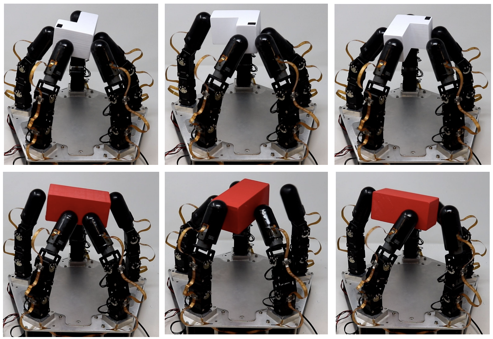

|
Qianhuang Li 李千凰 I am a second year master student in the Columbia University. My major is Mechanical Engineering. Currently, I am working at Robotic Manipulation and Mobility (ROAM) Lab, where I work on Dexterous Manipulation, advised by Prof. Matei Ciocarlie . Previously, I received my B.E. from Huazhong University of Science and Technolgy(HUST). During my undergrad, I was fortunate to be advised by Prof. Katie Byl from UCSB and Prof. Bo Tao from HUST. My research lies in locomotion and manipulation of robotics, with particular interest in AI and reinforcement learning. |
{kind=link}
Research Experience |
|  |
Sampling-based Exploration for Reinforcement Learning of Dexterous Manipulation
|

|
Fast-moving Bipedal Robot with Gait Optimization
|

|
Indoor Mapping Slam Robot
|
Course Experience |

|
Boce Hu, Chenfei Zhu, Xupeng Ai, Sunil Agrawl. Collection of the Robotics in Healthcare in Scientific Reports, 2023 [arXiv] [Code] |
Teaching
|
|
Website template from Jon Barron. Last updated: August 29, 2023. |